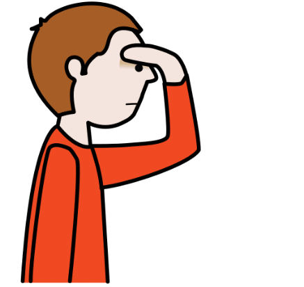

Diccionario
Ampliar
Definición:
Aumentar en tamaño de algo.
Ejemplo:
Quiero ampliar algunas de las fotos del viaje para enmarcarlas.¡Date tu tiempo!
Definición:
Expresión que anima a no tener prisa, a hacer las cosas con calma.
Ejemplo:
No tienes que decidirlo ahora: date tu tiempo para pensarlo.Inseparable
Definición:
Que está muy unido a otro con vínculos estrechos de amistad o de amor.
Ejemplo:
Somos amigos inseparables.Hechizar
Definición:
Ejercer sobre alguien una acción para dominar su voluntad.
Ejemplo:
Al principio del cuento la bruja hechizó al príncipe.Oponerse

Definición:
Que tiene una opinión contraria a la de otra persona o grupo.
Ejemplo:
No deberías oponerte a lo que te dice tu madre.Profundizar
Definición:
Examinar detenidamente una cosa hasta su perfecto conocimiento.
Ejemplo:
Vamos a profundizar en este tema tan interesante.Protagonista

Definición:
Persona que desempeña el papel principal en una obra, un hecho o un acontecimiento.
Ejemplo:
Me encanta el protagonista de esa serie.Vigilar

Definición:
Observar atentamente a una persona o cosa, para evitar que sufra o cause algún daño o peligro.
Ejemplo:
Vigila el guiso para que no se queme. Seguro que en más de una ocasión te hubiera gustado ser
Seguro que en más de una ocasión te hubiera gustado ser